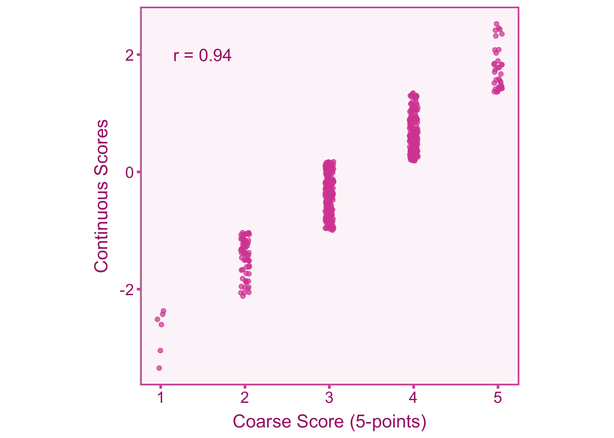

8.1 Introduction
Scale coarseness describes a situation where a variable that is naturally continuous (e.g., happiness) is binned into discrete values (e.g., happiness measured on a scale of 1-10). This situation is quite common in the social and psychological sciences where Likert items or dichotomous yes/no responses are aggregated to form a coarse total score for a naturally continuous construct. When coarseness is present, measurement error is introduced into the observed scores and those scores lose information. Unlike dichotomization, coarseness is an artifact that occurs due to the design of the study rather than during the analysis phase (Aguinis, Pierce, and Culpepper 2009). Particularly, dichotomization occurs after scores are obtained (e.g., splitting a group into high scorers and low scorers), whereas coarseness occurs as an artifact of the measurement instrument itself. The primary issue with coarseness is that it limits the set of possible values a score can be which introduces error when the variable is naturally continuous. Lets visualize how this occurs by sampling 500 data points from a normal distribution and binning the scores into 5 equal-interval scale points. Now the figure below shows the relationship between the coarse scores and the true underlying continuous scores.
Notice that the correlation between coarse and continuous scores is not perfect, indicating that the coarse scores do not perfectly capture the underlying continuous scores.
8.2 Correcting for Coarseness in Correlations
8.2.1 Defining our Estimand
Our quantity of interest is the population correlation, \(\rho\), between continuous independent variable, \(x\), and continuous dependent variable, \(y\). We can model the relationship between the observed sample correlation on coarse scores and the true population correlation,
\[ r_o = a\rho+\varepsilon. \]
Where \(a\) is our coarseness biasing factor and \(\varepsilon\) is our sampling error term. Ultimately, we can obtain an unbiased estimate of the true (continuous) population correlation by correcting the observed correlation as follows,
\[ r_c = \frac{r_o}{a}. \]
8.2.2 Artifact Correction for Coarseness
To correct the correlation between coarse scores for \(x\) and \(y\), we need to know the correlation between coarse scores and their underlying continuous scores. These correlations between coarse scores and their underlying continuous scores do not have a specific closed form equation as of now (Aguinis, Pierce, and Culpepper 2009). To find this we need to make a couple of assumptions:
- The shape of the underlying distribution (i.e., normal or uniform).
- The intervals between scale-points are equal.
Peters and Voorhis (1940) constructed a table based on these assumptions that is also reported more recently by Aguinis, Pierce, and Culpepper (2009). The table below shows the correction factor for a given number of scale points and underlying distribution shape (either normal or uniform). The correction factor is equal to the correlation between coarse scores and the underlying continuous normal (or uniform) distribution. For the normal distribution correction, its been shown that even in cases of extreme skew, these correction factors perform well Wylie (1976).
| Scale Points | Correction Factor (normal) | Correction Factor (uniform) |
|---|---|---|
| 2 | .816 | .866 |
| 3 | .859 | .943 |
| 4 | .916 | .968 |
| 5 | .943 | .980 |
| 6 | .960 | .986 |
| 7 | .970 | .990 |
| 8 | .977 | .992 |
| 9 | .982 | .994 |
| 10 | .985 | .995 |
| 11 | .988 | .996 |
| 12 | .990 | .997 |
| 13 | .991 | .997 |
| 14 | .992 | .997 |
| 15 | .994 | .998 |
These correction factors can be applied similarly to the correction formula for reliability (see chapter 5),
\[ r_c = \frac{r_o}{a_x a_y}. \]
Where \(a_x\) and \(a_y\) are the appropriate correction factors from the table for \(x\) and \(y\). We must also adjust the sampling variance as well,
\[ \sigma^2_{\varepsilon_c} = \frac{\sigma^2_{\varepsilon_o}}{a^2_x a^2_y}. \]
8.2.3 Correcting Correlations in R
To correct scale coarseness in R, we can use the table in Section 8.2.2. Lets start by simulating a coarse data (5 scale-points for x and 7 scale-points for y) set of 500 individuals with a true population correlation of \(\rho = .50\).
# set seed
set.seed(343)
# load packages
# install.packages('MASS')
library(MASS)
# simulate data
n <- 500
rho <- .50
data <- mvrnorm(n = n,
mu = c(0,0),
Sigma = data.frame(x=c(1,rho),y=c(rho,1)),
empirical = TRUE)
# obtain simulated continuous data
x <- data[,1]
y <- data[,2]
# get coarse data
x_coarse <- as.numeric(cut(x,breaks=5))
y_coarse <- as.numeric(cut(y,breaks=7)) Now we can calculate the observed standardized mean difference and apply the correction factor.
# calculate observed d value
ro <- cor(x_coarse,y_coarse)
# correct observed do using table
ax <- .943
ay <- .970
# correct observed d value
rc <- ro/(ax*ay)
# print results
rbind(paste0('Observed: ro = ', round(ro,3)),
paste0('Corrected: rc = ', round(rc,3))) [,1]
[1,] "Observed: ro = 0.457"
[2,] "Corrected: rc = 0.5" 8.3 Correcting for Coarseness in d values
8.3.1 Defining our Estimand
Our quantity of interest is the population standardized mean difference, \(\delta\), between groups \(A\) and \(B\) on variable, \(y\). We can model the relationship between the observed sample standardized mean difference on coarse scores and the true population standardized mean difference,
\[ d_o = a\delta+\varepsilon. \]
Where \(a\) is our coarseness biasing factor and \(\varepsilon\) is our sampling error term. Ultimately, we can obtain an unbiased estimate of the true (continuous) population standardized mean difference by correcting the observed standardized mean difference as follows,
\[ d_c = \frac{d_o}{a}. \]
8.3.2 Artifact Correction for Coarseness
To correct a standardized mean difference for coarseness in the outcome variable, \(y\), we can use the correction factors from the table in Section 8.2.2,
\[ d_c = \frac{d_o}{a}. \]
Where \(a\) is the appropriate correction factor from the table. We must also adjust the sampling variance as well,
\[ \sigma^2_{\varepsilon_c} = \frac{\sigma^2_{\varepsilon_o}}{a^2}. \]
8.3.3 Correcting Standardized Mean Differences in R
To correct scale coarseness in R, we can use the table in Section 8.2.2. Lets start by simulating a coarse data (5 scale-points) set of 1000 individuals with a true population standardized mean difference of \(\delta = .50\).
# set seed
set.seed(343)
# simulate data
nA <- nB <- 1000
yA <- rnorm(nA,.5,1)
yB <- rnorm(nB,0,1)
# concatenate data
group <- c(rep('A',nA),rep('B',nB))
y <- c(yA,yB)
# get coarse data
y_coarse <- as.numeric(cut(y,breaks=5)) Now we can calculate the observed standardized mean difference and apply the correction factor.
# calculate observed d value
do <- ( mean(y_coarse[group=='A']) - mean(y_coarse[group=='B']) ) / sqrt((var(y_coarse) + var(y_coarse))/2)
# correct observed do using table
ay <- .943
# correct observed d value
dc <- do/ay
# print results
rbind(paste0('Observed: do = ', round(do,3)),
paste0('Corrected: dc = ', round(dc,3))) [,1]
[1,] "Observed: do = 0.499"
[2,] "Corrected: dc = 0.529"